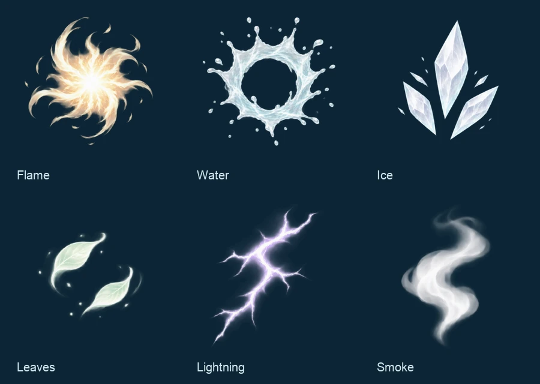

STAR BORNE · NATIVE EDITION
让每一次爆发
更有光，也更有力量。
TestFlight 8.1.0（20）已可更新这次专注 iOS：元素火花、卷焰、水花、冰晶与雷光，配合局部灯光、短拖尾和完整人物大招立绘。现有网页版保持上一版快照。
原生战斗实录
录自 iPhone 模拟器中的原生 Release App，效果未在视频后期添加。视频静音；游戏内音乐和音效保留。释放瞬间
本轮特效美术

由 imagegen 创作透明纹理，再整理尺寸与透明边界，随 App 本地打包。
iPhone、iPad 各61项自动化通过，另完成55个音乐与音效开启的 Release 场景。玩法核心与上一版逐字节一致。模拟器结果不代表实体手机的 GPU、温控或长时间体验。